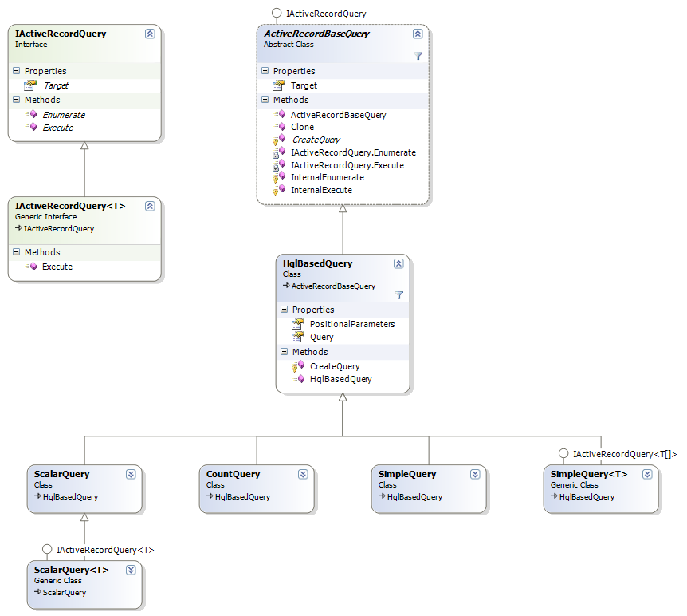

Using HQL (Hibernate Query language)
As NHibernate is database agonstic, a query language is used to query NHibernate entities. The query is translated to the underlying database and then executed.
Teaching HQL is out of the scope of this article. You should consult the NHibernate documentation on HQL.
There are at least three different ways to run a HQL query using ActiveRecord. 
SimpleQuery and ScalarQuery
SimpleQuery and ScalarQuery can be used in cases where the query would be a direct HQL query call, with no complex parameter handling.
Here's some samples:
[ActiveRecord] public class Blog : ActiveRecordBase { ... // static method from Blog class, retrieves all Post instances // from the blog of the specified author. public static Post[] GetPostsFromAuthor( String author ) { SimpleQuery q = new SimpleQuery(typeof(Post), @" from Post p where p.Blog.Author = ? ", author); return (Post[]) ExecuteQuery(q); } // static method from Blog class, retrieves the ID of all Post instances // in a specified date interval public static int[] GetPostIdsFromInterval( DateTime start, DateTime end ) { // the second type parameter specifies the type of the query result SimpleQuery q = new SimpleQuery(typeof(Post), typeof(int), @" select p.ID from Post p where p.Date between ? and ? ", start, end); return (int[]) ExecuteQuery(q); } // instance method from Blog, gets the last post date public DateTime LastPostDate() { ScalarQuery q = new ScalarQuery(typeof(Post), @" select max(p.Date) from Post p where p.Blog = ? ", this); return (DateTime) ExecuteQuery(q); } }
[ActiveRecord] public class Blog : ActiveRecordBase<Blog> { ... // static method from Blog class, retrieves all Post instances // from the blog of the specified author. public static Post[] GetPostsFromAuthor( String author ) { SimpleQuery<Post> q = new SimpleQuery<Post>(@" from Post p where p.Blog.Author = ? ", author); return q.Execute(); } // static method from Blog class, retrieves the ID of all Post instances // in a specified date interval public static int[] GetPostIdsFromInterval( DateTime start, DateTime end ) { // the second type parameter specifies the type of the query result SimpleQuery<int> q = new SimpleQuery<int>(typeof(Post), @" select p.ID from Post p where p.Date between ? and ? ", start, end); return q.Execute(); } // instance method from Blog, gets the last post date public DateTime LastPostDate() { ScalarQuery<DateTime> q = new ScalarQuery<DateTime>(typeof(Post), @" select max(p.Date) from Post p where p.Blog = ? ", this); return q.Execute(); } }
Custom Query
If your want:
- custom parameter handling;
- custom SQL queries (not HQL);
- direct use of NHibernate's
Criteria; or - direct access to NHibernate's
ISessionorIQueryobjects
Then you can write a custom ActiveRecord query.
You just need to inherit from ActiveRecordBaseQuery (or implement the IActiveRecordQuery interface).
For example:
public class QueryWithNamedParameters : ActiveRecordBaseQuery { public String AuthorName = null; public int MaxResults = 2; public QueryWithNamedParameters() : base(typeof(Blog)) { } protected override void CreateQuery(ISession session) { String hql = "from Blog b"; if (AuthorName != null) hql += " where b.Author = :author"; IQuery q = session.CreateQuery(hql); if (AuthorName != null) q.SetString("authorName", AuthorName); q.SetMaxResults(MaxResults); return q; } protected override object InternalExecute(ISession session) { IQuery q = CreateQuery(session); return SupportingUtils.BuildArray(typeof(Blog), q.List(), null, false); } }
The usage:
[ActiveRecord] public class Blog : ActiveRecordBase { ... public Blog[] GetThreeBlogsFromAuthor( String authorName ) { QueryWithNamedParameters q = new QueryWithNamedParameters(); q.AuthorName = authorName; q.MaxResults = 3; return (Blog[]) ExecuteQuery(q); } }
TODO: sample of custom query using NHibernate's CreateCriteria() and CreateSQLQuery().
Execute Callback
The third way to write custom queries is to use the Execute method, which basically does the same as the Custom Query approach, but without the need to write any additional classes.
[ActiveRecord] public class Blog : ActiveRecordBase { ... public static Post[] GetPostsFromAuthor( String author ) { return (Post[]) Execute( new NHibernateDelegate(GetPostsFromAuthorCallback), author ); } private object GetPostsFromAuthorCallback( ISession session, object instance ) { // create the query... IQuery query = session.CreateQuery( "from Post p where p.Blog.Author = :author" ); // set the parameters... query.SetString("author", (String) instance); // fetch the results... IList results = query.List(); // OPTIONAL: convert the results to an array or // something meaningful, instead of returning the IList Post[] posts = new Post[results.Count]; results.CopyTo(posts, 0); // return return posts; } }
[ActiveRecord] public class Blog : ActiveRecordBase<Blog> { ... public static Post[] GetPostsFromAuthor( String author ) { return (Post[]) Execute( delegate(ISession session, object instance) { // create the query... IQuery query = session.CreateQuery( "from Post p where p.Blog.Author = :author" ); // set the parameters... query.SetString("author", (String) instance); // fetch the results... IList results = query.List(); // OPTIONAL: convert the results to an array or // something meaningful, instead of returning the IList Post[] posts = new Post[results.Count]; results.CopyTo(posts, 0); // return return posts; }, author); } }